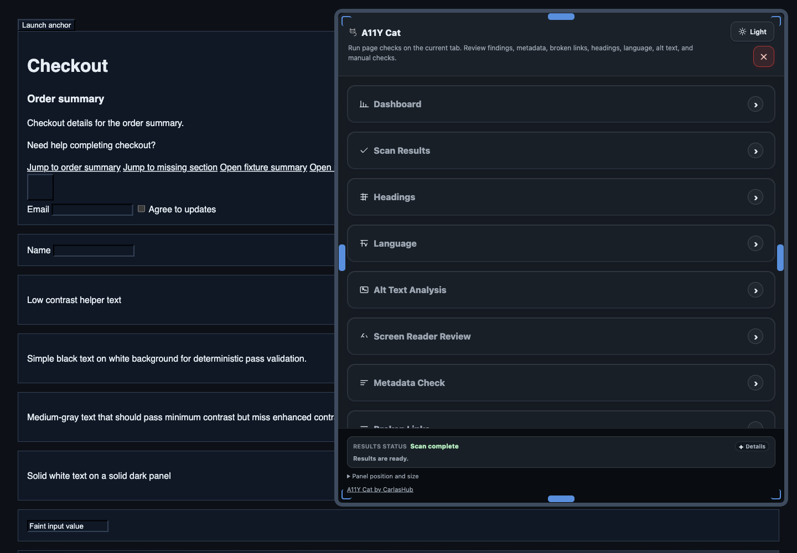

Compatibility
Compatibility and WCAG scan scope
Implementation-accurate browser/platform compatibility and axe-core WCAG tag scope for the current private beta build.

Environment compatibility matrix
| Environment | Status | Notes |
|---|---|---|
| Chrome desktop | Supported for private beta | Primary MV3 extension target. |
| Microsoft Edge Chromium | Expected, needs broader verification | Chromium runtime is compatible, but validation depth is lower than Chrome in this beta. |
| Firefox | Not supported | No Firefox extension adaptation/package is shipped in this release. |
| Safari | Not supported | No Safari extension package is shipped in this release. |
| Windows | Pending packaged runtime verification | Private beta testing is possible, but packaged runtime verification is not fully closed for release sign-off. |
| macOS | Supported for private beta testing | Current private beta validation has been run on macOS-hosted Chromium workflows. |
| Linux | Limited, not primary beta target | No broad Linux qualification claim is made for this release. |
WCAG scan scope (implementation truth)
A11Y Cat runs axe-core with runOnly tags set to wcag2a, wcag2aa, wcag21a, wcag21aa, wcag22a, and wcag22aa in the shared scan runtime.
The scan requests axe result types violations, incomplete, passes, and inapplicable, and the extension classifies that output into confirmed issues, review items, advisory notes, and limitations.
No conformance guarantee: A11Y Cat reports mapped Web Content Accessibility Guidelines (WCAG) criteria where available. It does not prove WCAG conformance and does not replace manual accessibility or assistive-technology testing.
Where this scope is used
- Understanding Results for confirmed/review/advisory boundaries.
- UI Feature Guide for feature-by-feature result handling and exports.
- Known limitations for unsupported contexts and manual validation requirements.